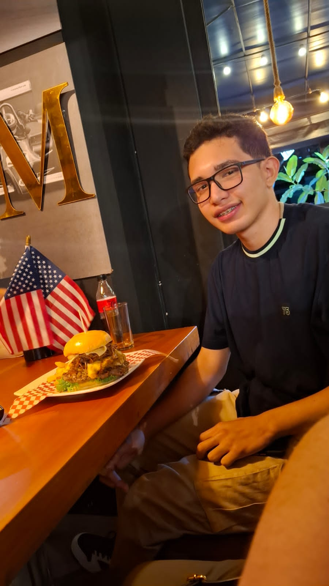

Desarrollador Backend
Apasionado por los videojuegos, el anime y la creación de mundos digitales. Entré a la programación para desarrollar mi propio videojuego. Me especializo en el backend.
🚀 Mi Historia
Llegué a la programación por mi amor a los videojuegos. Decidí estudiar programación con el anhelo de crear mi propio videojuego y, si es posible, fundar un estudio de videojuegos colombiano medianamente reconocido.
Quiero aprender todo lo posible sobre tecnología, adquirir experiencia y, a futuro, formar mi propio estudio de videojuegos.
🛠️ Proyectos
📬 Contacto
📧 josedavidpabonpallares@gmail.com
🐦 @cronox_808